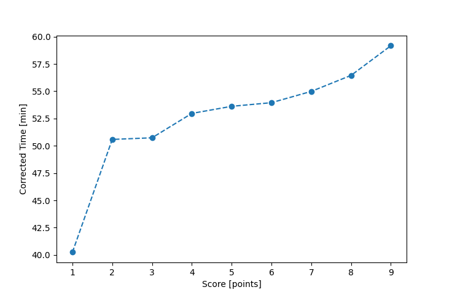

| Wind: | 2-3 (BFT) |
|---|---|
| RC: | Paul_BNick_H |
| Date: | August 21, 2016 |
| Notes: | M2 270 |
| Rank / Score | Name | Boat | Input Time [mm:ss] | Input Offset [mm:ss] | Race Time [mm:ss] | Race Time [s] | Handicap | Corrected Time [s] | Corrected Time [mm:ss] |
|---|---|---|---|---|---|---|---|---|---|
| 1.0 | John_T | US-1 | 36:45 | 00:00 | 36:45 | 2205 | 0.91300 | 2415 | 40:15 |
| 2.0 | Mike_F | SF | 50:47 | 00:00 | 50:47 | 3047 | 1.00400 | 3035 | 50:35 |
| 3.0 | Bill_P | SF | 50:56 | 00:00 | 50:56 | 3056 | 1.00400 | 3044 | 50:44 |
| 4.0 | David_Bu | SF | 53:11 | 00:00 | 53:11 | 3191 | 1.00400 | 3178 | 52:58 |
| 5.0 | Nedra_F | SF | 53:50 | 00:00 | 53:50 | 3230 | 1.00400 | 3217 | 53:37 |
| 6.0 | Art_M | SWSX | 51:44 | 00:00 | 51:44 | 3104 | 0.95900 | 3237 | 53:57 |
| 7.0 | Rod_H | LASEM | 53:30 | 00:00 | 53:30 | 3210 | 0.97300 | 3299 | 54:59 |
| 8.0 | Jay_H | SWSX | 54:08 | 00:00 | 54:08 | 3248 | 0.95900 | 3387 | 56:27 |
| 9.0 | Steve_R | HTR216 | 53:36 | 00:00 | 53:36 | 3216 | 0.90600 | 3550 | 59:10 |

Application Notes:
All race results are unofficial
View source code at https://github.com/cessnao3/portsmouthracecalc/